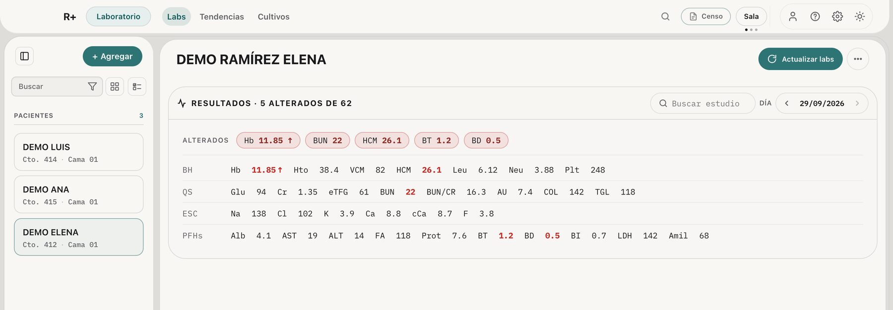
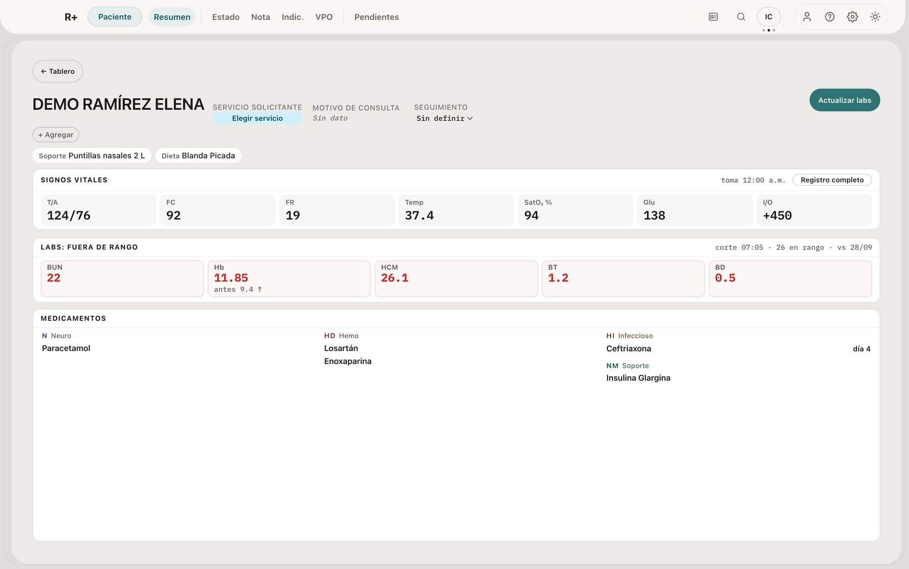
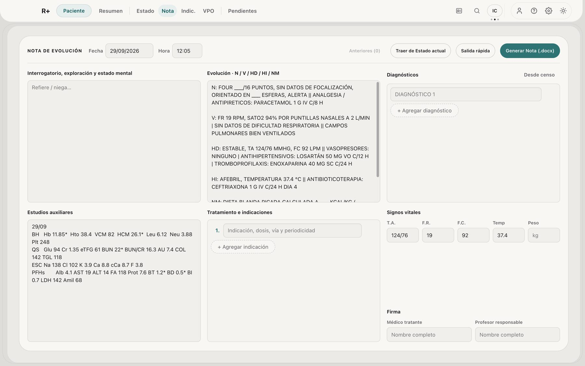

Así se ve un expediente en R+
Labs, signos, medicamentos y pendientes viven juntos en cada expediente. La nota, las indicaciones y el censo salen de ahí.
Labs sin copiar y pegar
Le das a Actualizar labs y R+ trae lo nuevo del portal. Si prefieres, pegas el reporte. Lo alterado sale arriba, un chip por valor, y el resto queda en su grupo. Con las flechas vas a los días anteriores.

Cómo se movió cada valor
Tendencias pone cada analito con su último valor, su rango y cuánto cambió. La línea de la derecha muestra los últimos 5 días.

Cómo va hoy
Resumen junta signos, labs fuera de rango y medicamentos. Cada lab alterado trae su valor de antes. El antibiótico lleva su día. Soporte y dieta salen bajo el nombre. Los pendientes están a una pestaña.

La nota empieza llena
Los labs de hoy ya están en Estudios auxiliares. Con Traer de Estado actual, signos, soporte y medicamentos entran a la evolución. Tú escribes la exploración y R+ arma el .docx. Indicaciones y censo salen del mismo expediente.
